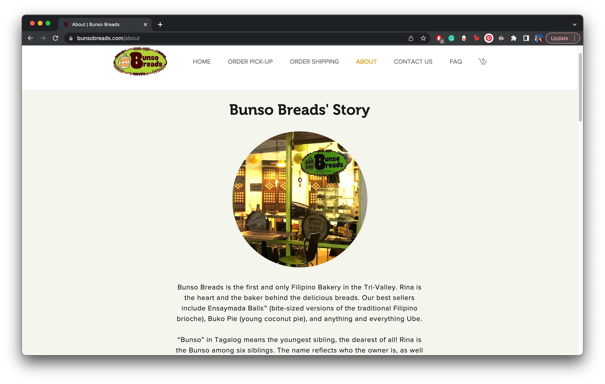
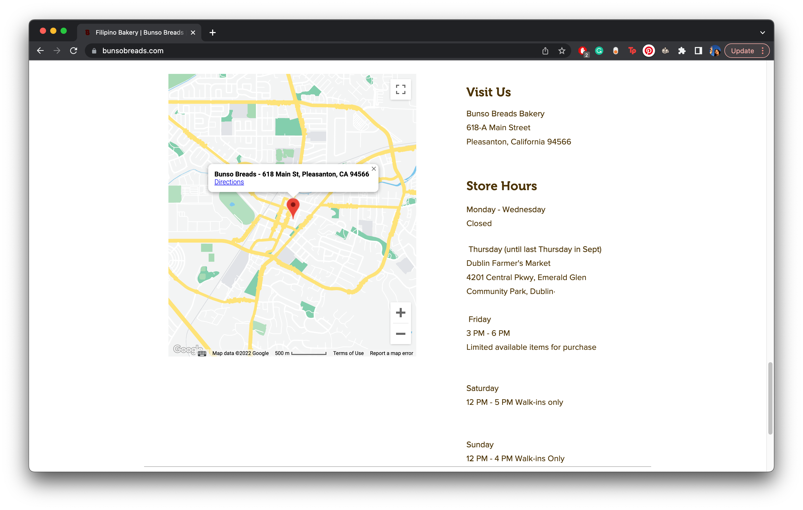

Final project proposal
Introduction
Makulit
Makulit is a Filipino family-owned bakery in Oxnard, California that sells Filipino baked goods.
Target audience
Older Filipino-American folk are the main users of these Filipino bakery websites.
Many of the users tend to be Filipino parents or grandparents buying these goods for their families. It is only customary to bring some sort of goods or foods to Filipino family gatherings. Because Filipinos are big sweet tooths, they love to purchase from bakeries and dessert places.
Comparative analysis
Goldilocks
Red Ribbon


Bunso Breads
 Website content
Home
Mabuhay! Order our new special cake roll for delivery or pickup!
[Ube Cake Roll on a table.]
Menu
Sweet Pastries
-
Ube Cake Roll
Purple yam chiffon filled with cream & macapuno strings, finished with ube crumbs & coconut flakes.
$18.00
[Ube Cake Roll]
-
Cheesy Mamon - Pack of Six
Our best-selling Butter Mamon topped with cheesy goodness.
$16.00
[Cheesy Mamon]
-
Ube Mamon - Pack of Six
Moist and soft chiffon cake bursting with ube flavor.
$16.00
[Ube Mamon]
-
Pandesal - Pack of Six
Classic soft bread buns rolled in bread crumbs.
$16.00
[Pandesal]
-
Mango Cake
Three layers of moist white chiffon cake, filled with our signature cream, mango glaze and real Philippine mangoes.
$32.50
[Mango Cake]
-
Taisan Loaf
Moist and light chiffon cake topped with buttery goodness, in loaf size.
$10.00
[Taisan Loaf]
-
Ube Flan
Rich moist ube chiffon cake topped with delicious creamy leche flan.
$32.50
[Ube Flan]
-
Sans Rival
Four-layers of meringue wafer, rich buttercream icing and scrumptious cashew nuts.
$32.50
[Sans Rival]
Location
Come visit us at 1234 Bruno Rd, Oxnard, California, 93033!
[Makulit Store in Oxnard, California]
About
Founded in 2022, Makulit is a proudly Filipino-owned bakery that started as a way for our family to explore our Filipino culture through baked goods. Our family would frequently baked these goods together for Filipino parties and gatherings, but we soon realized that this is something that we can do for a living, as many people love our food.
[Photo of the Makulit Family]